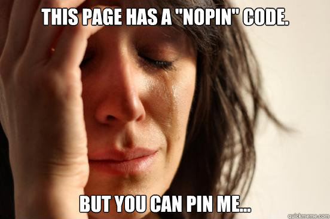

2012-02-25
Having a code to block Pinterest, so you can't pin images from this page.
<meta name="pinterest" content="nopin"/>
If you click button, the "nopin" code is removed dynamically.
Reload this page and click the button, you can pin images.
What a pity!
